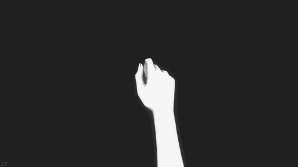

THE
ENGAGE-
MENT
PART ONE
Draw blood, draw blood for me.
Not with a crayon, do it with a knife.
Show me that you mean it, you need me in your life.
Tell me that you love me and need me always near.
Surrender all suggestion, your purpose and your fear.
